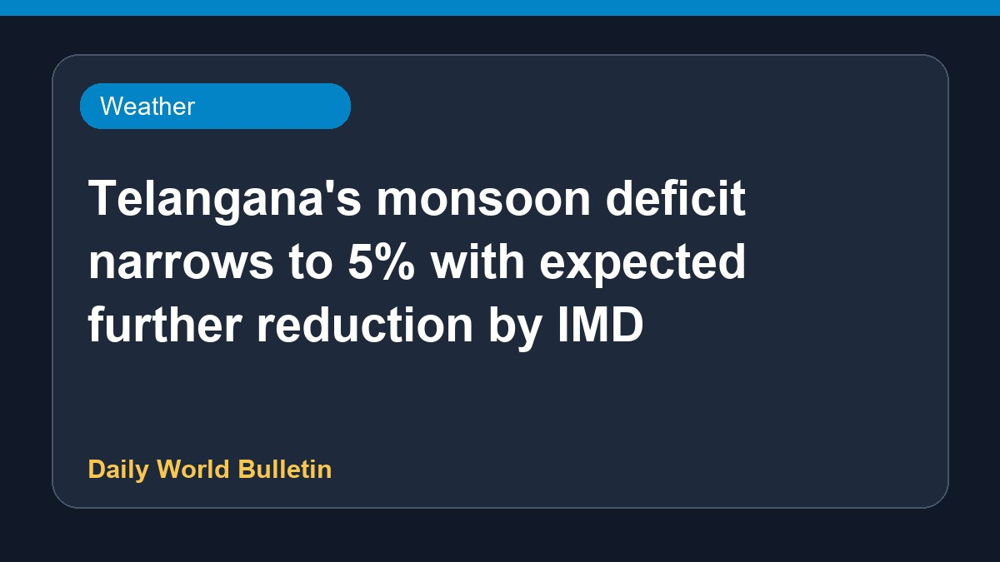

Telangana's monsoon deficit narrows to 5% with expected further reduction by IMD

According to the IMD, the monsoon deficit in Telangana has now decreased to 5 percent. Weather officials anticipate that this deficit will narrow down even further in the coming days. The update provides relief as rainfall conditions continue to improve across the region, boosting agricultural prospects and water storage levels.
Original source: Weather News Sources
Telangana’s monsoon deficit now at 5%; to narrow further: IMD - The New Indian Express ↗
Telangana’s monsoon deficit now at 5%; to narrow further: IMD - The New Indian Express ↗